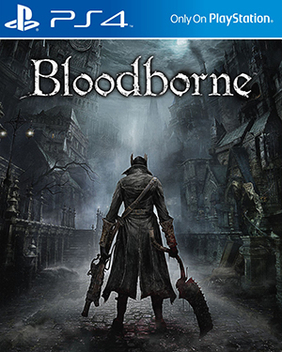
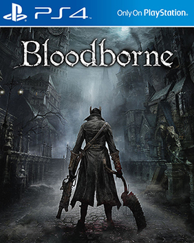
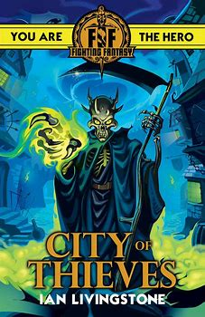
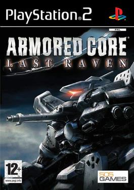
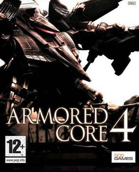
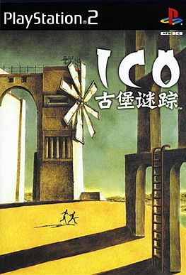
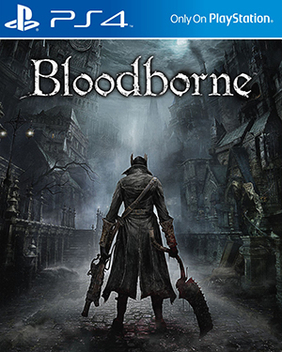

 Miyazaki grew up "tremendously poor" while living in the city of Shizuoka, Japan around 1975.He often borrow books from the libary.His favorite book is calledFighting Fantasy.It is a book for gaming,let the reader decide how the story to continue.But most of the books he read can't be understood,so he useimagination,that's why his games always desribe the story in pieces.He wants players to enjoy the joy of imagining.
   He graduated from Keio University.At first he wanted to do game design,but at last,he worked in Oracle Corporation.After a friend recommended a calledICO,it made him consider the road of being a game designer.However at the age of 29,not many company wanted to hire him.In the end,He chose From Software.He started developing Armored Core: Last Ravenand even became the director ofArmored Core 4
There is a plan in the company being seen as a failure,but in Miyazaki Hidetaka's eyes,it can be a great game.Then he become the director ofDemon's Souls.It is the first time souls game came out.At first,the game did not sold well,but Miyazaki did not give up.He tried his best to publicity the game.After a few months,the sales of the game became better and better

His game is hard, but if you can stand for dyng again and again to do research on the bossess' actions,it is not that hard.When you are fighting,your movement is very realistic and you do not really have a cool moves plus the fantastic hit effect.You can feel yourself are in the game fighting.Also,the difficulty is not harder and harder, so every time you meet a new mob,bring players a curiosity.
The map in his game is designed very well, you aleays do not know where does the door lead you to,and there are many important things about the world and the story,let you combine the pieces into a whole story
There is a feature in his game,traps is everywhere,from behind the door,to trap treasure box.It can give you a lot of surprise.
In the Souls series,every main characters is not special.He is a nobody in the big world,but he just accidentally has the mission to finish passing the fire.Even you finish the game,choose to pass the fire,you can not get anything,no one know who you are and do not want to khow.In Dark Souls III,you are combination of ember,the undead that failed to pass the fire and burn into ashes,inherit everything in the past and finish the history.